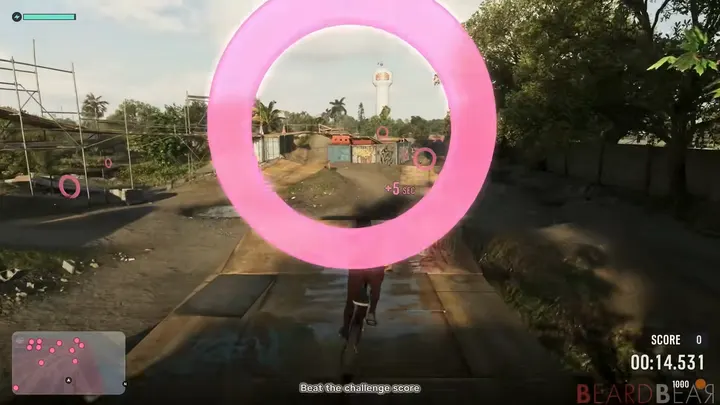
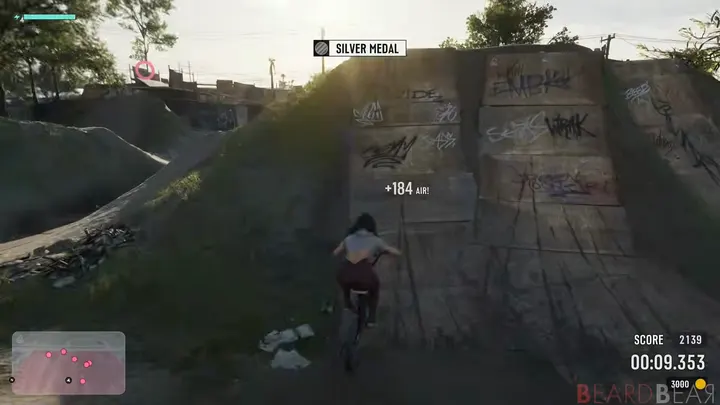

Все 80 испытаний GTA 6 с отметками
Опубликовано:

- В GTA 6 80 испытаний — по 10 в 8 разделах; все открыты с начала игры.
- 50 — трофей One Last Thing, 70 — пункт чек-листа 100%.
- Все 80 открывают чит Hauners P-996 Lazer, все 10 фитнес-испытаний — чит ’65 Vapid Dominator, все 10 транспортных — Progen Emerus.
- Прогресс: Прогресс → Испытания.
Как работают испытания
Испытания — список целей в меню Прогресс → Испытания. Открывать их не нужно: все 80 доступны с самого начала, порядок любой, разделы можно чередовать. Многие засчитываются сами, пока вы проходите сюжет и собираете коллекционки. Читы за испытания работают только после финала сюжета.
| Сколько | Награда |
|---|---|
| 50 | трофей One Last Thing |
| 70 | пункт чек-листа 100% |
| все 10 в разделе «Фитнес» | чит ’65 Vapid Dominator |
| все 10 в разделе «Транспорт» | чит Progen Emerus |
| все 80 | чит Hauners P-996 Lazer |
Отмечайте выполненные — отметки сохраняются в браузере.
Бой (Combat)
Криминал (Criminal)
Исследование (Exploration)
Фитнес (Fitness)
Покупки (Shopping)
Спорт (Sports)
Выживание (Survival)
Транспорт (Vehicle)




Какие 10 оставить напоследок
Для 100% можно пропустить любые 10. Обычно тяжелее всего даются: Helipad Flyovers (41 площадка за 10 минут), Basketball Pro (все 100 площадок), Pro Angler (все виды рыб), Legendary Hunter, Train Landing, Oceanarium Jump, Nest Egg ($1,5 млн на счёте) и Double Hole In One.
Частые вопросы
Сколько испытаний в GTA 6?
80: по 10 в разделах бой, криминал, исследование, фитнес, покупки, спорт, выживание и транспорт.
Сколько испытаний нужно для 100%?
70 из 80; для трофея One Last Thing — 50.
Что дают все 80 испытаний?
Чит Hauners P-996 Lazer (работает после финала сюжета).
Нужно ли открывать испытания?
Нет, все доступны с начала игры.
Источники: PowerPyx, «GTA 6 All Challenges Guide» и Trophy Guide, 18.11.2026; GamerFuzion, «GTA 6 Challenges: All 80», 19.11.2026; Insider Gaming, «All GTA 6 Challenges», 19.11.2026; Alcast HQ, «All GTA 6 Challenges», 19.11.2026; Power Up Gaming, 19.11.2026; Red Bull и Playday — список читов, 18.11.2026. Кнопки указаны для PS5, в скобках — Xbox.